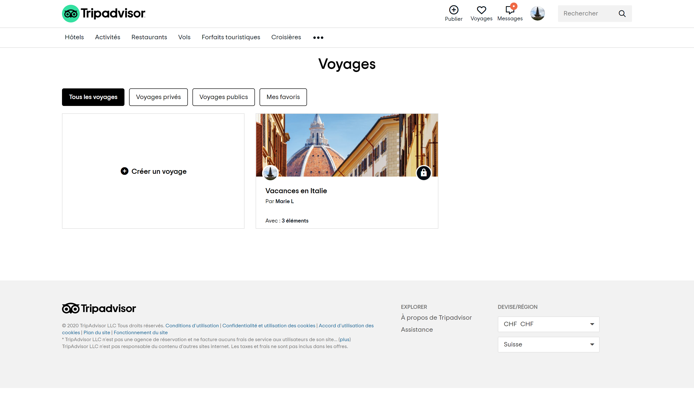

class: center, middle # MAS-RAD -- Advanced Front-end Development (DFA) --- ## Summary .breadcrumbs[<a href="#1">MAS-RAD -- Advanced Front-end Development (DFA)</a>] The goal of this course is to discover concepts and tools to organize the front-end side of a web application and enrich the user interface/experience according to current good practices. You will: - learn how to make good use of a CSS framework to build a responsive HTML user interface - learn (or review) how to manipulate the DOM API with or without a library - learn how to manage asynchronous communications with a Web API on the back end - learn how the use of a framework does help to organize the front-end code of a single page application - be introduced to frameworks that help you develop and build your web application for multiple devices Everything starts from here: [https://github.com/MediaComem/comem-masrad-dfa][dfa-site] --- ## Course deliverable .breadcrumbs[<a href="#1">MAS-RAD -- Advanced Front-end Development (DFA)</a>] The final deliverable of this course is a complete frontend web application for a pre-existing API named **Travel Log**, which allow users to publish logs of their travels around the world to other users. <p class="center"> <img src='images/travel-log.png' style="width: 40%;" /> </p> > The project can be developed by **one** or **two** people ; you'll define each group at a later time. --- ## Back end .breadcrumbs[<a href="#1">MAS-RAD -- Advanced Front-end Development (DFA)</a>] Your web application will make use of a REST web service backend that is already implemented and ready to be used. [Travel Log API Documentation][travel-api] > We'll see later on this course how to call and exploit those APIs <p class="center"> <img src='images/archi-dfa.png' width='70%' /> </p> --- ## Travel Log .breadcrumbs[<a href="#1">MAS-RAD -- Advanced Front-end Development (DFA)</a>] This idea is somewhat inspired by the [Trip feature of TripAdvisor][tripadvisor].  --- ### Create a Trip .breadcrumbs[<a href="#1">MAS-RAD -- Advanced Front-end Development (DFA)</a> > <a href="#5">Travel Log</a>] This feature of TripAdvisor allows users to create trips (either to plan future trips or make a log during the trip), and add places to them. Each trip as a description, a cover photo and each place of a trip can be commented by other users. <img src='images/tripadvisor-places.png' width='100%' /> --- ### Features requirements .breadcrumbs[<a href="#1">MAS-RAD -- Advanced Front-end Development (DFA)</a> > <a href="#5">Travel Log</a>] In your case, a Travel Log application must allow users to: - **register a new account** and **log in/out** to the app - **create a trip** with a title and a description - **add places to a trip** at a specific location, with a title, description and picture - **manages their created trips/places** (update/delete) - **see a list of trips** and **access the details of a trip**, including the list of its places - **see places on a map** for one or all trips and **see the details** of those places - **filter places and/or trips** so as to see only some of them somewhere in the app - **search places and/or trips** somewhere in the app - **post comments** on places and **see comments** for them somewhere in the app --- ### Implementation requirements .breadcrumbs[<a href="#1">MAS-RAD -- Advanced Front-end Development (DFA)</a> > <a href="#5">Travel Log</a>] In addition to the features requirements, your app must: - follow Angular best practices - use at least the API related to your subject - correctly handle asynchronous operations (callbacks, promises or observables) - use HTML5 Geolocation API (e.g. to automatically center the map or place an issue/place on the map) - use Leaflet/OpenLayers/MapBox to display a map and stuff on it > You're free to add features to your app that are not listed on this slidedoc. > > They could add some bonus points to your grade, provided that they are correctly implemented and functionnal. > > Be advised that stuffing your app with a load of additionnal features without implementing the required ones is not a very good idea... --- ## Delivery .breadcrumbs[<a href="#1">MAS-RAD -- Advanced Front-end Development (DFA)</a>] Each person or group's GitHub repository will be cloned locally on **monday morning 31st of august** and will be evaluated as is. - Only the **main** branch content will be evaluated. Don't forget to merge any development or feature branches before the deadline! - If your application requires **environment files** that are not tracked in your repository, please provide them to [Mathias Oberson](mailto:mathias.oberson@squareservices.ch) by email on the deadline date. - Your repository must contains a documentation (e.g. `README.md` file at the root of the repo) that: - Describe your overall development approach (problems, obstacles, solutions) - Presents your application (what does it do, how does it work, what are the features), like a user manual - Explains the choices your made while developing (did your follow any style guidelines? architectural principles? did you use other packages not seen during the cours? etc.) [dfa-site]: https://github.com/MediaComem/comem-masrad-dfa [fixmystreet]: https://www.fixmystreet.com/ [ms-team]: https://teams.microsoft.com/l/team/19%3afcbfad4d3c8b409b8f683132c5fe527c%40thread.tacv2/conversations?groupId=b475ad95-6078-4856-bbd6-fa6e64316983&tenantId=a372f724-c0b2-4ea0-abfb-0eb8c6f84e40 [travel-api]: https://demo-travel-log-api.onrender.com/ [tripadvisor]: https://fr.tripadvisor.ch/Trips/